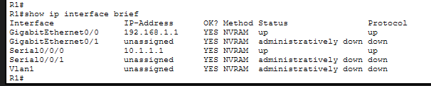
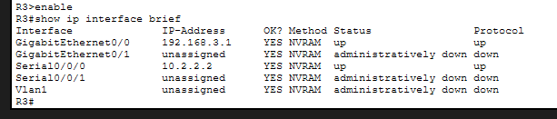
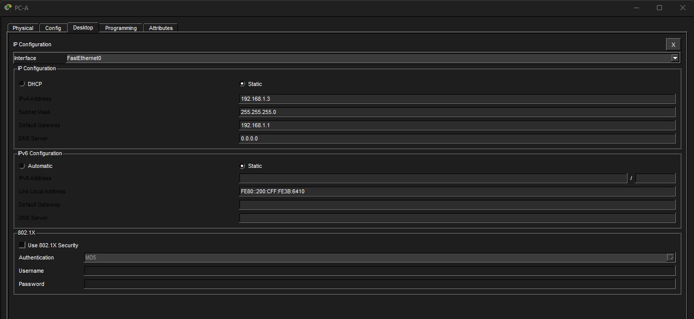
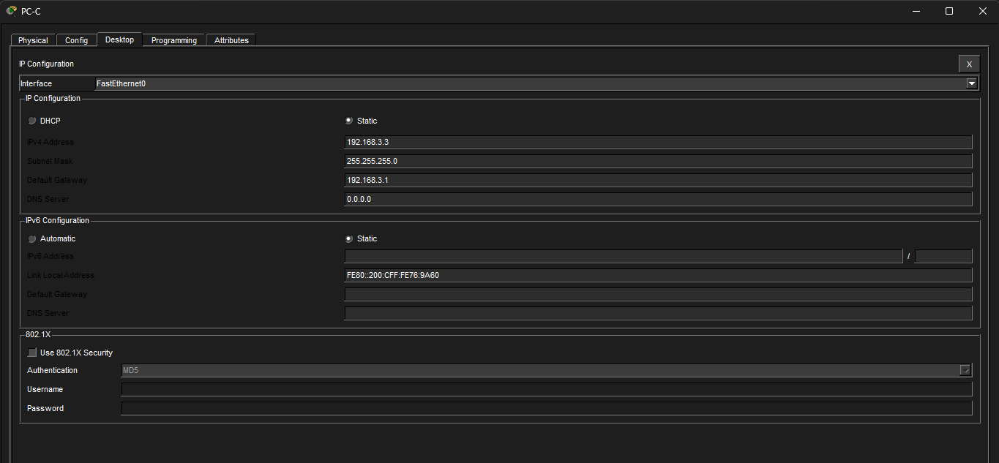

Rapport : VPN Site-to-Site IPsec
1. Infrastructure et Topologie
Le projet repose sur trois routeurs Cisco 1941. Le routeur R2 simule le fournisseur d'accès Internet (ISP), tandis que R1 et R3 sont les passerelles de sécurité des deux sites distants.
Configuration matérielle
Chaque routeur a été équipé d'un module HWIC-2T pour permettre les liaisons séries simulant le WAN.
 Vue physique du routeur R1 avec le module HWIC-2T installé.
Vue physique du routeur R1 avec le module HWIC-2T installé.
Plan d'adressage
Les interfaces ont été configurées avec des IP statiques pour établir la connectivité de base avant le montage du tunnel.



Vérification de l'état des interfaces UP/UP sur l'ensemble de l'infrastructure.2. Mise en place de la Sécurité
Activation des fonctionnalités cryptographiques
Sur les équipements Cisco, la sécurité IPsec nécessite l'activation d'un package technologique spécifique. J'ai procédé à l'activation de la licence securityk9.
 Commande d'activation : license boot module c1900 technology-package securityk9.
Commande d'activation : license boot module c1900 technology-package securityk9.
Configuration d'IPsec
La configuration s'est déroulée en deux phases majeures :
- Phase 1 (ISAKMP) : Définition de l'algorithme de chiffrement (AES), de l'authentification (Pre-shared key) et du groupe Diffie-Hellman.
- Phase 2 (IPsec) : Création du
transform-setet de lacrypto mappour l'encapsulation des données.
3. Validation et Tests de Chiffrement
Pour valider la réussite du projet, un test de connectivité (Ping) a été effectué entre le PC-A (192.168.1.3) et le PC-C (192.168.3.3).


Configuration IP statique des terminaux finaux.Preuve de chiffrement (Encapsulation/Décapsulation)
L'analyse des compteurs de sécurité confirme que le trafic passe bien par le tunnel chiffré. On observe que les paquets sont encapsulés et chiffrés à l'envoi, puis décapsulés et déchiffrés à la réception.
.png) Succès : #pkts encaps: 7 | #pkts decaps: 6. Le tunnel est opérationnel.
Succès : #pkts encaps: 7 | #pkts decaps: 6. Le tunnel est opérationnel.